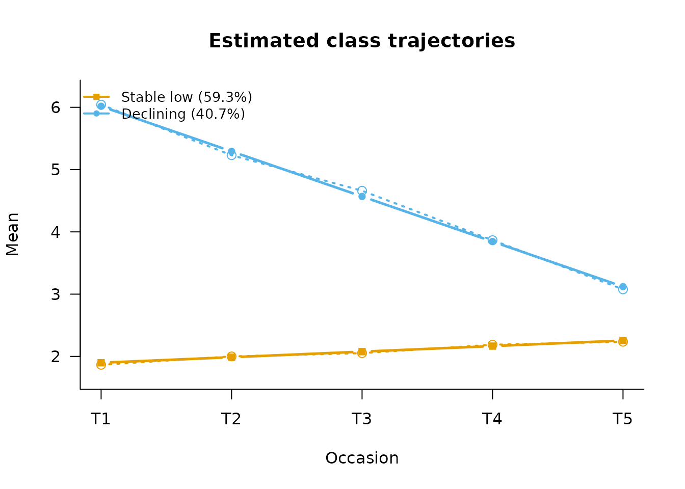

Trajectory Classes: LCGA and Growth Mixture Models
Source:vignettes/growth_mixture.Rmd
growth_mixture.RmdWhen a continuous outcome is measured repeatedly, two related models group cases by the shape of their trajectory over time, rather than by a single score:
- Latent class growth analysis (LCGA) sorts cases into classes that each follow one shared curve — everyone in a class is assumed to follow essentially the same trajectory, give or take measurement noise (Jung & Wickrama, 2008).
- Growth mixture models (GMM) relax that assumption: cases still belong to a class with its own typical curve, but each person is allowed to start a bit higher or lower, and rise or fall a bit faster or slower, than their class’s average (Muthén & Shedden, 1999). LCGA is the special case where that person-to-person wiggle room is fixed at zero.
The practical difference: because LCGA has no other way to absorb within-class differences, it tends to need more, narrower classes to fit the same data; a GMM can often describe it with fewer, broader ones.
Simulated example: five-wave symptom scores
We simulate 700 cases in two known trajectory classes — a stable-low class and a declining class — with genuine within-class variation in both intercept and slope, i.e. GMM-type data:
set.seed(2026)
n <- 700
cls <- rbinom(n, 1, 0.4) # 1 = Declining (40%)
icept <- ifelse(cls == 1, 6.0, 2.0) + rnorm(n, 0, 0.9)
slope <- ifelse(cls == 1, -0.7, 0.05) + rnorm(n, 0, 0.25)
waves <- 0:4
Y <- outer(icept, rep(1, 5)) + outer(slope, waves) +
matrix(rnorm(n * 5, 0, 0.8), n, 5)
colnames(Y) <- paste0("score_t", 1:5)LCGA first
An LCGA with a linear curve per class:
fit_lcga2 <- fit_lcga(Y, times = 5, n_classes = 2, family = "gaussian",
degree = 1, n_init = 15, random_state = 5)
fit_lcga2
#>
#> =========================================================
#> LATENT CLASS GROWTH ANALYSIS
#> =========================================================
#> Occasions : 5 (time scores 0, 1, 2, 3, 4)
#> Trajectory : linear, identity link
#>
#> GROWTH COEFFICIENTS (link scale)
#> intercept linear
#> Class 1 1.825 0.037
#> Class 2 5.768 -0.592
#>
#> FITTED TRAJECTORY (mean)
#> T1 T2 T3 T4 T5
#> Class 1 1.825 1.862 1.899 1.936 1.973
#> Class 2 5.768 5.176 4.583 3.991 3.399
#>
#> RESIDUAL VARIANCE (within class, constant over occasions)
#> Class 1 Class 2
#> Variance 1.513 1.753
#> =========================================================
#> LATENT MIXTURE MODEL
#> =========================================================
#> Classes Estimated : 2
#> Estimation Method : 1-step
#> Converged : TRUE (in 11 iterations)
#> ---------------------------------------------------------
#> Log-Likelihood : -6245.41
#> Rel. Entropy : 0.9175
#> Best solution : found by 15 of 15 starts
#> ---------------------------------------------------------
#> Class Weights (Sizes):
#> Class 1: 55.66%
#> Class 2: 44.34%
#> =========================================================
#> Type summary(model) for structural parameters or measurement_summary(model) for item parameters.The GMM
fit_gmm() adds random intercepts and slopes (the
default, random_effects = "intercept_slope"):
fit_gmm2 <- fit_gmm(Y, times = 5, n_classes = 2, n_init = 15,
random_state = 5)
fit_gmm2
#>
#> =========================================================
#> GROWTH MIXTURE MODEL
#> =========================================================
#> Occasions : 5 (time scores 0, 1, 2, 3, 4)
#> Trajectory : linear
#> Random effects : intercept, linear
#>
#> GROWTH FACTOR MEANS
#> intercept linear
#> Class 1 1.897 0.089
#> Class 2 6.015 -0.724
#>
#> GROWTH FACTOR (CO)VARIANCE (held equal across classes)
#> intercept linear
#> intercept 0.766 0.008
#> linear 0.008 0.056
#>
#> RESIDUAL VARIANCE (held equal across classes)
#> T1 T2 T3 T4 T5
#> Variance 0.676 0.655 0.653 0.579 0.655
#>
#> FITTED TRAJECTORY (mean)
#> T1 T2 T3 T4 T5
#> Class 1 1.897 1.987 2.076 2.165 2.254
#> Class 2 6.015 5.291 4.567 3.843 3.119
#> =========================================================
#> LATENT MIXTURE MODEL
#> =========================================================
#> Classes Estimated : 2
#> Estimation Method : 1-step
#> Converged : TRUE (in 39 iterations)
#> ---------------------------------------------------------
#> Log-Likelihood : -5570.91
#> Rel. Entropy : 0.9113
#> Best solution : found by 4 of 4 starts
#> ---------------------------------------------------------
#> Class Weights (Sizes):
#> Class 1: 59.29%
#> Class 2: 40.71%
#> =========================================================
#> Type summary(model) for structural parameters or measurement_summary(model) for item parameters.Because LCGA is nested in the GMM, the information criteria say directly whether the random effects are earning their parameters — here they are, by a wide margin, as simulated:
data.frame(
model = c("LCGA (2 classes)", "GMM (2 classes)"),
ll = c(fit_lcga2$metrics$ll, fit_gmm2$metrics$ll),
bic = c(fit_lcga2$metrics$bic, fit_gmm2$metrics$bic)
)
#> model ll bic
#> 1 LCGA (2 classes) -6245.414 12536.69
#> 2 GMM (2 classes) -5570.910 11226.98plot() overlays the observed class means on the
estimated curves — the check that a class describes a real subgroup
rather than an artifact of splitting one cloud in half:

Covariates, two different questions
Two kinds of covariate enter a growth mixture model, and they answer different questions:
- Who is in which class? — class-membership predictors, through the usual stepwise workflow:
x_member <- rnorm(n, mean = 0.7 * cls)
fit_cov <- add_covariates(fit_gmm2, x_member)
#> Using 'ML' bias correction (set `correction` to override).
results <- summary(fit_cov)
#> =========================================================
#> STRUCTURAL MODEL SUMMARY
#> =========================================================
#>
#> CATEGORICAL LATENT VARIABLE REGRESSION (CLASS PREDICTORS)
#> Reference Class: 1
#> Standard errors: Step-3 sandwich (robust); step-1 correction unavailable for this measurement model
#> ---------------------------------------------------------
#> OR [95% CI] P-Value
#>
#> Class 2 ON
#> Intercept 0.562 [ 0.471, 0.670] < .001
#> x_member 1.820 [ 1.539, 2.152] < .001
#> =========================================================-
Who, within a class, starts higher or declines
faster? — covariates on the growth factors themselves, which
are part of the measurement model and therefore supplied to
fit_gmm()directly:
x_growth <- rnorm(n)
fit_gp <- fit_gmm(Y, times = 5, n_classes = 2,
growth_predictors = x_growth,
n_init = 15, random_state = 5)
print(fit_gp)
#>
#> =========================================================
#> GROWTH MIXTURE MODEL
#> =========================================================
#> Occasions : 5 (time scores 0, 1, 2, 3, 4)
#> Trajectory : linear
#> Random effects : intercept, linear
#>
#> GROWTH FACTOR INTERCEPTS
#> intercept linear
#> Class 1 1.898 0.089
#> Class 2 6.012 -0.723
#>
#> GROWTH FACTORS ON COVARIATES (held equal across classes)
#> x_growth
#> intercept -0.037
#> linear 0.011
#>
#> GROWTH FACTOR (CO)VARIANCE (held equal across classes)
#> intercept linear
#> intercept 0.766 0.010
#> linear 0.010 0.056
#>
#> RESIDUAL VARIANCE (held equal across classes)
#> T1 T2 T3 T4 T5
#> Variance 0.678 0.655 0.653 0.579 0.656
#>
#> FITTED TRAJECTORY (at the mean of the covariates)
#> T1 T2 T3 T4 T5
#> Class 1 1.898 1.988 2.077 2.167 2.256
#> Class 2 6.012 5.288 4.565 3.842 3.118
#> =========================================================
#> LATENT MIXTURE MODEL
#> =========================================================
#> Classes Estimated : 2
#> Estimation Method : 1-step
#> Converged : TRUE (in 48 iterations)
#> ---------------------------------------------------------
#> Log-Likelihood : -5570.48
#> Rel. Entropy : 0.9110
#> Best solution : found by 4 of 4 starts
#> ---------------------------------------------------------
#> Class Weights (Sizes):
#> Class 1: 59.25%
#> Class 2: 40.75%
#> =========================================================
#> Type summary(model) for structural parameters or measurement_summary(model) for item parameters.Practical cautions
- A GMM whose data cannot support its covariance structure does not
fail loudly — it drives a variance to the boundary. mixtureEM warns when
a solution sits on the boundary; treat that as a sign to simplify
(
psi = "equal",random_effects = "intercept", or LCGA). - Class enumeration is harder than in cross-sectional LCA: BIC, the plotted trajectories against observed means, and substantive interpretability should all agree before a solution is reported (Nylund et al., 2007).
References
Jung, T., & Wickrama, K. A. S. (2008). An introduction to latent class growth analysis and growth mixture modeling. Social and Personality Psychology Compass, 2(1), 302–317. https://doi.org/10.1111/j.1751-9004.2007.00054.x
Muthén, B., & Shedden, K. (1999). Finite mixture modeling with mixture outcomes using the EM algorithm. Biometrics, 55(2), 463–469. https://doi.org/10.1111/j.0006-341X.1999.00463.x
Nylund, K. L., Asparouhov, T., & Muthén, B. O. (2007). Deciding on the number of classes in latent class analysis and growth mixture modeling: A Monte Carlo simulation study. Structural Equation Modeling, 14(4), 535–569. https://doi.org/10.1080/10705510701575396